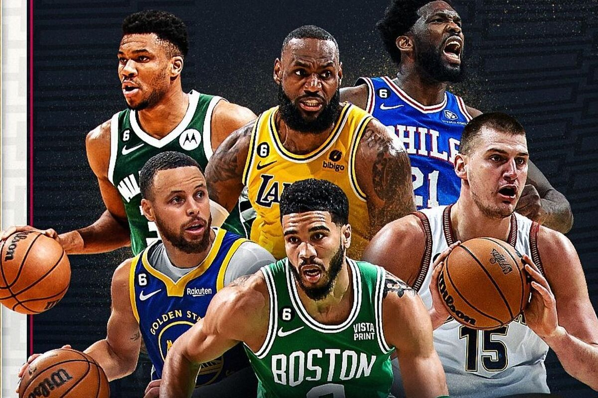

NBA IS BACK! These Are The Top 5 Teams Heading Into the 2023-24 Season
By Javier Solares
Hello NBA fanatics! It's that time of year again when everyone predicts which team will rise among the rest. Which team is going to claim the Larry O'Brien trophy at the end and cement their legacy? Will this be LeBron's final run? Can Tatum finally get over the hump and raise Banner 18 into the rafters? How good will the offensive firepower of the KD-Booker-Beal trio be against the rest of the league? Is this a revenge season for the Bucks after the quick, disappointing end in last year's playoffs. Or will Jokic, Murray, and the rest of the squad dominate and repeat as champions. Lets take a look and dive into the top 5 teams that I believe will be competing for the bragging rights this year.
RANKINGS